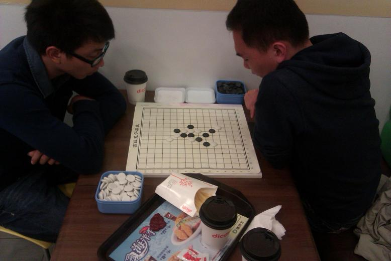
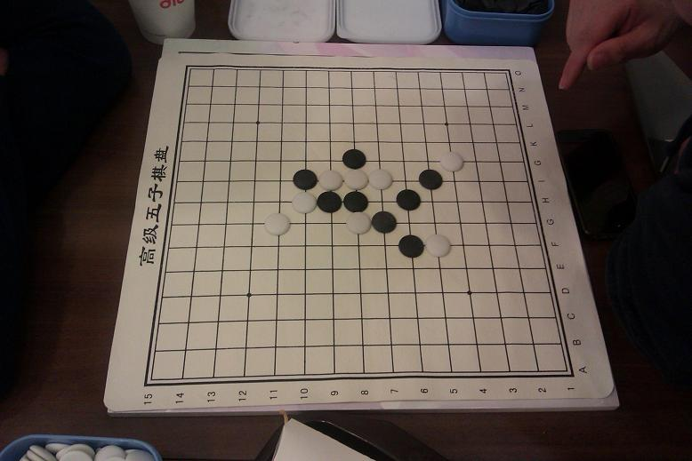
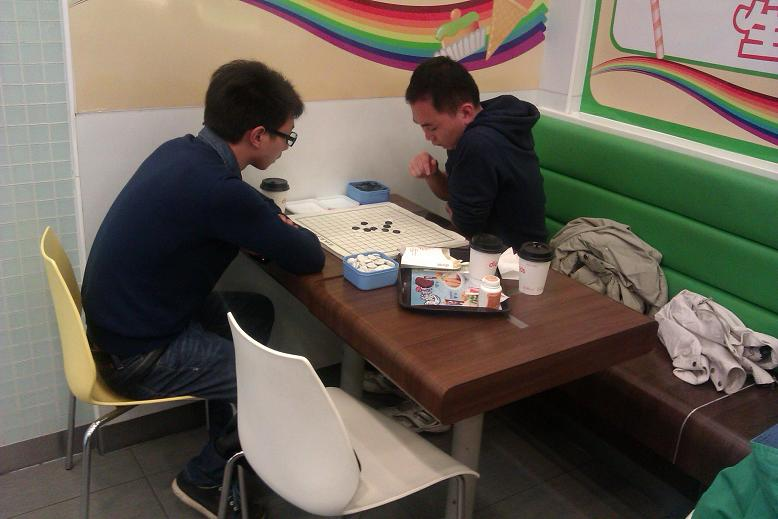
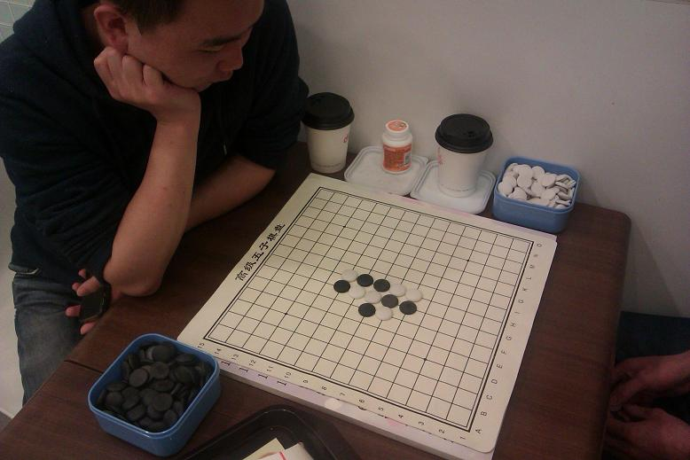
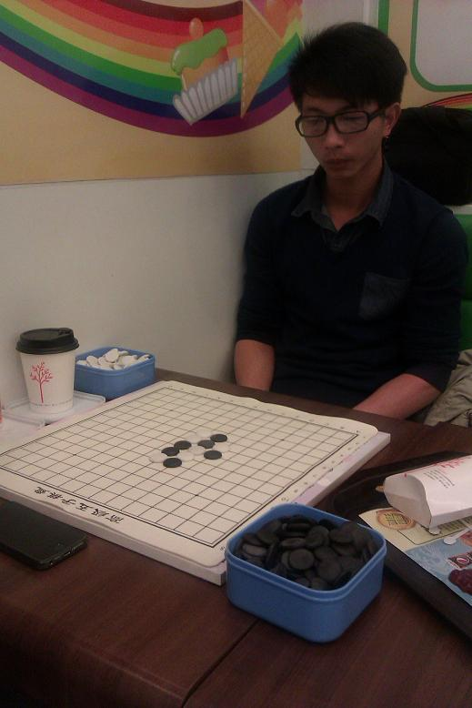
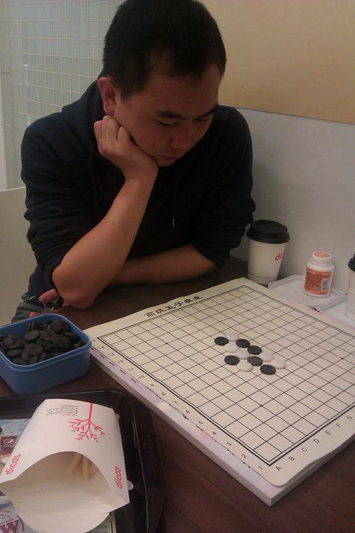
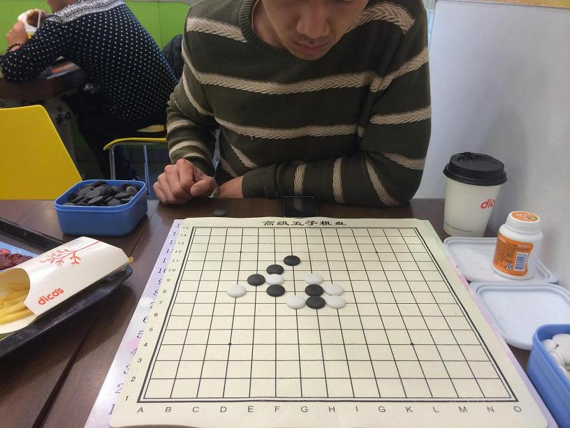
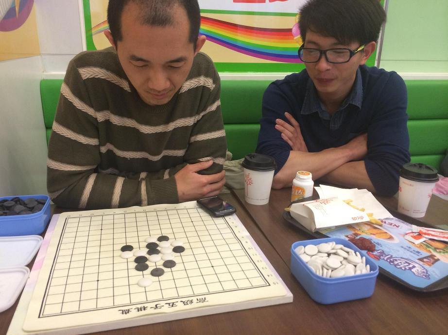
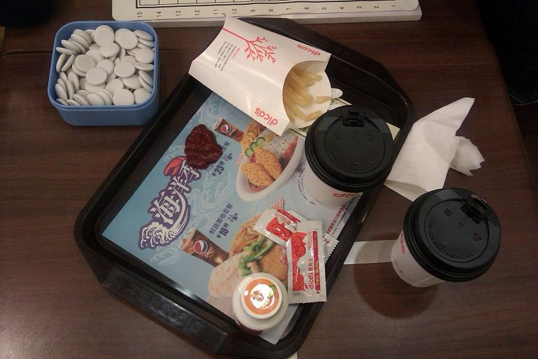

2014年4月7日福州棋友小聚会
#1 2014年4月7日福州棋友小聚会 作者：wuxiao 发表时间：2014-4-8 10:49:16
2014年4月7日福州棋友小聚会
时间：4月7日下午
地点：福州白湖亭德克士餐厅
人员：小虫、一雄、小鸟
活动内容：下棋、拱趴
前一天仨人约好第二天一起聚聚，当天我抱着试一试的心态，
发了6条短信给其它福州的棋友，看看能有几人出来下棋的，
过一会，回信息了：
第1条：我在家陪老婆
第2条：我不在福州
第3条：我在扫墓
第4条：太远了，不过去了
第5条：爬山，脚残废了......
第6条：（杳无音信......）
好吧，只比我预期的差那么一点点。

小鸟和一雄

黑VCT

手谈

对称棋型--我不告诉你这是松月4打

小鸟，特点：喜欢凭棋感下棋，不常深入计算。
戴着一付有镜片没度数的黑框眼镜，文艺吊丝小青年，哈哈！
一雄，特点：当局面占优或者下了一手自己比较满意的棋时，
就会猛喝一小口饮料，有时候间隔不到几十秒就会再来一口。

黑苦防

猛算黑必

点一些吃的混座位
［此帖子已被 wuxiao 在 2014-4-8 11:38:16 编辑过］
［ 梧桐风同学于 2014-4-9 19:49:44 时花20金币送鲜花一朵］
［ 梧桐风同学于 2014-4-9 19:49:44 时花20金币送鲜花一朵］
［ 梧桐风同学于 2014-4-9 19:49:44 时花20金币送鲜花一朵］
［ 梧桐风同学于 2014-4-9 19:49:44 时花20金币送鲜花一朵］
［ 梧桐风同学于 2014-4-9 19:49:44 时花20金币送鲜花一朵］
［ 梧桐风同学于 2014-4-9 19:49:44 时花20金币送鲜花一朵］
［ 梧桐风同学于 2014-4-9 19:49:44 时花20金币送鲜花一朵］
［ 梧桐风同学于 2014-4-9 19:49:44 时花20金币送鲜花一朵］
［ 岳麓小棋后同学于 2014-7-19 21:19:57 时花20金币送鲜花一朵］
#2 Re:2014年4月7日福州棋友小聚会 作者：涩涩棋 发表时间：2014-4-8 14:05:39
顶，已经很久没下五子棋的飘过#3 Re:2014年4月7日福州棋友小聚会 作者：虎哥 发表时间：2014-4-8 15:58:58
这种感觉很好。#4 Re:2014年4月7日福州棋友小聚会 作者：华夏使者 发表时间：2014-4-8 16:02:00
小虫要注意保养头发了#5 Re:2014年4月7日福州棋友小聚会 作者：木石 发表时间：2014-4-9 19:27:51
我们南昌棋友也经常聚会玩，而且还有妹子！嘿嘿！#6 Re:2014年4月7日福州棋友小聚会 作者：厦小三 发表时间：2014-7-15 14:23:09
啥时候的事情了